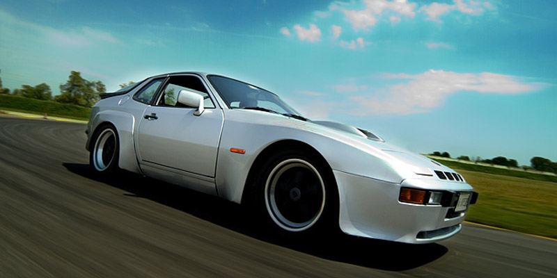
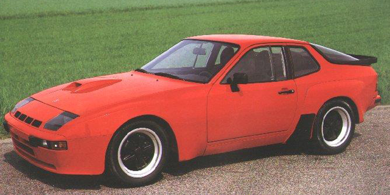

The Porsche 924 was a design commission undertaken by Porsche for VW/Audi that was abandoned by the client and sold back to Porsche late in development, with Audi agreeing to build the car at its Neckarsulm plant. The 924 was a success and brought in much needed cash after the company hit trouble following the 1970s oil crisis. About 125,000 924s and 14,000 924 Turbos (officially designated Porsche 931) were sold between 1976 and 1985.
In 1979 Porsche submitted a styling exercise to the Frankfurt Motor Show to introduce ideas that shaped the look of the forthcoming 944.
The following year, the company entered the 924 at Le Mans, and needed to homologate a race car to meet Group 4 racing regulations (although the racers were eventually entered in the GTP class).
The homologation version was called the 924 Carrera GT and was a developed 924 Turbo incorporating wider front and rear wings similar to those seen on the well-received styling exercise.
Porsche made 406 924 Carrera GTs in 1981, including six prototypes. LHD cars are designated type 937, RHD are 938 (75 made). The 924 GT makes 210bhp
from a developed 924 Turbo engine, weighs 1,180 kilos, has 49/51 weight distribution, handles well, is reliable, has
racing pedigree, and is one of the cheapest Porsches to maintain.
A step up from the GT is the GTS, of which 59 were made in the Stuttgart factory. These are more powerful than the 924 Carrera GT thanks largely to running increased boost and are easily distinguished by the perspex headlamp covers replacing
the pop-up headlights on the GT, and an intercooler in front of the engine rather than on top of it. 15 of the 59 were Club Sport cars, which had a roll cage and were even more powerful and lighter than the GTS.
19 full race 924 Carrera GTRs were produced, of which nine either raced or qualified at Le Mans.
Feel free to contact me at 924gtr@gmail.com with any questions, feedback, or images for use on the site.
| Variant | # Made | Power/torque | Boost | Weight | 0-60, VMAX | Notes |
| 924 Carrera GT | 406 (75 RHD) | 210bhp, 203lb/ft | 0.75 bar | 1,180kg | 6.9s, 150mph | Red, silver, black |
| 924 Carrera GTS | 44 | 245bhp, 247lb/ft | 1.0 bar | 1,121kg | 6.2s, 155mph | LHD red only |
| 924 Carrera GTS CS | 15 | 270bhp, 247lb/ft | 1.1 bar | 1,060kg | 5.2s, 158mph | LHD red only |
| 924 Carrera GTR | 19 | 320bhp+ | N/A | 930kg | 4.7s, 180mph+ |
|  |  |